If we want to determine star colors, calculate transformation coefficients to transform data to a standard system or obtain magnitudes of stars for which we don't have standards in the same field, we must reduce multiple observation frames together.
People fortunate enough to observe in photometric conditions can use a number of packages to reduce their data. For low altitude dwellers, the selection is not that large. For them, GCX implements multiple-frame reduction routines that are designed to work in less than perfect conditions.
Input data to the multi-frame reduction consists of observation reports as produced by the aperture photometry routine. For color coefficient fitting and transformation to a standard system, we need frames of the target objects taken in enough bands. For all-sky reductions, the observation reports need to have accurate time and airmass information (which implies that the original frames need to have enough information for the airmass determination).
To keep notation simple, let's assume that we reduce data taken in B
and V. We'll use  and 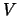 for the standard magnitudes, and
and 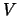 for the standard magnitudes, and  and
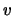 for the instrumental magnitudes. The expressions for the standard
magnitudes are:8.1
and
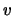 for the instrumental magnitudes. The expressions for the standard
magnitudes are:8.1
| 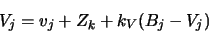 | (8.2) |
| 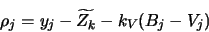 | (8.3) |
| 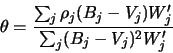 | (8.4) |
| 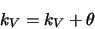 | (8.5) |
| 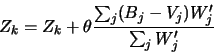 | (8.6) |
We can choose any color index for a given band. For instance, there is
nothing stopping us from calculating a 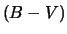 transformation
coefficient for  or 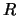 magnitudes. In fact, if we have more
standards data in B and V, it may prove better to do so. In general,
Equation (8.1) can be written for any band
or 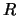 magnitudes. In fact, if we have more
standards data in B and V, it may prove better to do so. In general,
Equation (8.1) can be written for any band  as:
as:
When the field of our intended target doesn't contain any suitable standard stars, we have to determine their magnitudes by comparing to stars in a different field. To do this, we need to determine a relation between the zeropoints of different frames.
Under photometric conditions, we can consider that the atmospheric
extinction8.3depends only on the thickness of the atmosphere along the light
path. The ratio between the thickness of the atmosphere in the
direction of field and it's thickness towards zenith is called the
airmass of the field. The airmass depends on the zenital angle
z of the field, and is close to 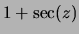 when far from the
horison. The formula used by GCX is the following:8.4
| 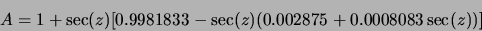 | (8.8) |
If the extinction is unform in all directions, we can define an extinction coefficient  , so that for any frame:
, so that for any frame:
| 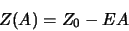 | (8.9) |
Because the GCX all-sky routine is targeted at less-than-perfect conditions, we will choose another strategy in determining the extinction coefficient. We use several standard fields located relatively near our target fields. Then we we try to ``chop'' the extinction coefficient as much as possible by alternating between the standard and target fields.8.5
We end up with a series of observations from different fields, all in the same general airmass range. By examining the standard fields' zeropoints variation with time and airmass, we can determine if there were any ``windows'' during which the extinction was stable.
Once a stable window was found, we can fit the extinction coefficient from the observations in that window. It is unlikely that the observations will span a wide range of airmasses, which will make the fitted value of the extinction coefficient somewhat imprecise. But this is offset by the fact that the airmass of the target frames is the same range, so the contribution of the extinction term is not very large. As long as the airmass of the standard fields brackets those of the target fields, we are interpolating rather than extrapolating the extinction.8.6
Before attempting to fit the extinction coefficient, the zeropoints and color transformation coefficient of all frames must be fitted. It is highly recommended to examine plots of the resulting zeropoints versus time and airmass to see if it's worth trying to do any all-sky reduction at all (more on this below).
With these precautions, the program will proceed to fit the extinction
coefficients using a variant of the algorithm described in
Appendix B,8.7with the initial weights assigned based on the calculated errors of
the zeropoints. The fitted model is:8.8
A different extinction coefficient is fitted for each band. Frames that are outliers of the fit (their standard error exceeds the threshold set in Multi-Frame Photometry Options/Zeropoint outlier threshold) are marked as such.
After fitting the extinction coefficient, we can apply Equation 8.11 and calculate the zeropoint of any target frame. The program tries to filter the frames for which such a determination would likely be in error. It will only calculate a zeropoint for frames which satisfy the following:
If 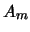 is the minimum and 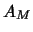 is the maximum standard airmass,
and 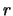 is the value of Multi-Frame Photometry
Options/Airmass range
the zeropoint is only calculated for frames with airmasses between
| 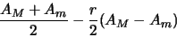 | (8.12) |
| (8.13) |
This section is a step-by-step tour of the multi-frame reduction tool. An realistically-sized example input file is provided in the distribution data directory (cygs-aug19.out). This file was generated by GCX aperture photometry from 143 frames taken in B, V, R and I in a single night, all in Cygnus. The standards data is from Henden sequence files, which were converted into GCX recipies with the import function. The file consists of individual aperture photometry reports appended together.
Before we can reduce data, we have to define which color indices are
used for each band. The Multi-Frame Photometry Options/Bands
setup option specifies this. It contains a list of specifiers of
the form: <band>(<c1>-<c2>) separated by spaces. Each specifier
tells the program to use the color index ``<c1>-<c2>'' to reduce
frames taken in ``band''. For example, the default setting:
b(b-v) v(b-v) r(v-r) i(v-i)
| 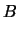 | 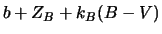 | (8.14) | |
| 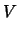 | 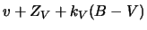 | (8.15) | |
| 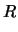 | 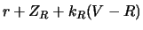 | (8.16) | |
| 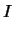 | 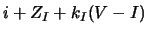 | (8.17) |
| 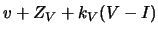 | (8.18) | ||
| (8.19) |
v(v-i) i(v-i)
The same option can be used to set initial transformation coefficients and their errors, by appending ``=<coeff>/err'' to each band specifier like for example:
b(b-v)=0.12/0.001 v(b-v)=-0.07/0.02
The data to be reduced can reside in one or more files. To load data, open the the multi-frame reduction dialog using Processing/Multi-frame reduction or Ctrl-M, and select File/Add to Dataset. Select the file name and press Ok. The data from the frames contained in the file will load, and the frames will appear in the ``Frames'' tab of the dialog.
More observations can be added by using Add to Dataset repeteadly.8.9 We'll assume the example file (cygs-aug19.out) is loaded for the next steps.
| Zpoint | The fitted zero point of the frame; |
| Err | The calculated error of the zero point; |
| Fitted | The number of standard stars used in the fit; |
| Outliers | The number of standard stars that are considered outliers of the fit (have large standard errors); |
| MEU | The mean error of unit weight for the zeropoint fit of the frame. |
Clicking on the column headers will make the program sort the list by the respective column. Clicking again will reverse the sort order. One or more frames can be selected in the list. All operations apply to the selected frames or, if none are selected, to the whole list.
| Name | The star's name. A star is identified across multiple frame by it's name; |
| Type | Star type (standard or target); |
| Band | The band the magnitudes are in; |
| Smag | The standard magnitude for the star. If the contents of this field are calculated by the program, as for target stars, the magnitude appears in square brackets; |
| Err | Error of the standard magnitude (either taken from the report file, or calculated by the program); |
| Imag | Instrumental magnitude in this observation; |
| Err | Error of the instrumental magnitude, taken from the report file; |
| Residual | The residual in the last fit of the frame. Only appears for standard stars; |
| Std Error | Standard error of the star (the residual divided by the estimated error). Only for the standard stars; |
| Outlier | ''Y'' or ``N'' depending on whether the star has a large standard error or not; |
| R.A, Dec | Star catalog position; |
| Flags | A list of flags that apply to the star. Some are taken from the report file, some are added by the fitting routines. |
The simplest type of fit we can do is fit the zeropoints of each frame individually, without taking the other frames into consideration (like the last step in the aperture photometry routine). Even though the report files likely contained the individual fit information, it was discarded when the report was loaded. We need to perform at least this step before we can generate any plots for the data.
There are two variants of this command: one zeroes all the transformation coefficients before doing the fit (Fit Zero Points with Null Coefficients), while the other will apply the current transformation coefficients to the standard stars first. (Fit Zero Points with Current Coefficients).
Make sure the frames you want to fit are selected before applying the command (if no frames are selected, the command will apply to all frames).
After the fit, examine the MEU column, which will show the quality of the fit (the number should be around 1.0). Since we only fitted the zeropoint, and not the color coefficients the values are slightly larger than the best than can be obtained.
| 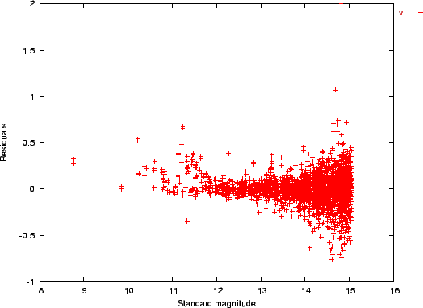 |
At this point, we can generate various plots, which are instrumental in judging the quality of the data, especially when we consider the more ellaborate fits. The program generates data file for the gnuplot utility, and will run gnuplot directly if the option File and Device Options/Gnuplot command is correctly set.8.10 If the Plot to File option in the Plot menu is selected, the program will generate a data file instead of running gnuplot directly.8.11
Let's select the V frames (click on the band column header twice to bring the V band at the top, then click on the first V frame, and finaly shift-click on the last V frame). Now run Plot/Residuals vs Magnitude. A plot should appear that is similar to the one in Figure 8.1.
The plot generally has the familiar shape of photon-shot noise dominated observations, with random errors increasing as the stars become fainter. An additional feature of this dataset are the ``branches'' going up starting at around mag 12 and 11. These are caused by saturated standard stars (the standards we used are not reliable above mag 12.5 or so). If the stars would be saturated in our observations, the ``branches'' would go downward.8.12
To investigate the matter further, we select a frame with a large number of outliers, which is likely to contain such a ``branch''. For example, let's select aucyg. The Residuals vs Magnitude plot for this frame is shown in Figure 8.2. The bright stars branching up are obvious in this plot. However, the importance of the errors is difficult to judge, as the ``normal'' error changes with the stars' magnitudes (and fainter stars show similar residuals). The Standard Errors vs Magnitude plot comes handy in this situation. It is similar to the previous plot, only the residuals are divided by the expected error of the respective stars. We expect all stars to show similar standard errors, all within a 6 units wide band around zero. This plot is shown in Figure 8.3. We can clearly see that the relatively large residuals to the right of the plot are within normal limits (also indicated by the value of the MEU fit parameter). The ``branch'' is clearly deviant (with standard errors going up to 30 and more).8.13 Fortunately, the robust fitting algorithm has downweighted the deviant points significantly, so the ``good'' values still spread symetrically around zero.8.14
| 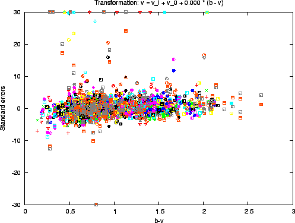 |
| 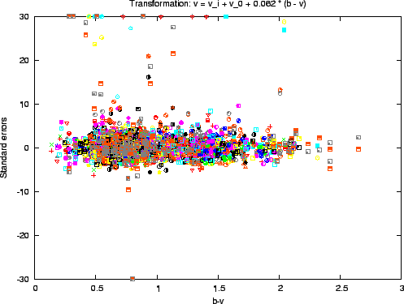 |
With the V frames selected, let's plot the standard errors again, this time against the star's color index. For this, select Plot/Standard Errors vs Color. The output should look similar to Figure 8.4. Even given the scatter of the individual observations, the plot shows a clear sloping (making the residuals proportional to the color index).8.15 To remove this slope and at the same time calculate the color transformation coefficient, we use Reduce/Fit Zero Points and Transformation Coefficients. After the fit is done, the slope is removed, as shown in Figure 8.5. The title of the figure shows the transformation used. In our case, the resulting tranformation coefficient is 0.062, a rather small figure indicating a good fit between the filters used and the standard ones. If we check the MEU fields for each frame, we will see that they have decreased, showing that the data more closely matches the standard magnitudes after the color transformation.
After the fit, the list in the ``Bands'' tab is updated to show the fitted transformation coefficients and their expected errors. Note that the error is quite small in our case (0.002),8.16 even though the data seemed to spread a lot. The large number of stars used in the fit helped reduce the error considerably.
A good sanity check for the transformation coefficient fit is to run the same routine on subsets of the initial data set and compare the resulting transformation coefficients. They should match within the reported error figures.
Before proceeding, let's do the transformation coefficient fit for the whole dataset: Edit/Unselect All, then Reduce/Fit Zero Points and Transformation Coefficients.
The example data set contains BVRI frames for all fields. However, only some of the fields have R and I standards data. The night was clear, but conditions were changing. Let's see what we can do about the R and I frames that need all-sky reduction.
We can examine the frame zero points versus the airmass, expecting them to fall on a down-sloping line.8.17 Using Plot/Zeropoints vs Airmass will produce the plot in Figure 8.6, which shows all the bands' zeropoints on the same graph. We see that most of the frames do indeed lie on down-sloping lines with a scatter consistent with their expected errors as shows by the error bars, but there are some outliers. So the conditions weren't photometric. If we now plot the same zeropoints against time (Plot/Zeropoints vs Time), Figure 8.7 we can see what has happened: the transparency has improved starting at MJD 53236.95, to the point where we can use the all-sky method for frames taken after that point.
Let's run the all-sky reduction (Reduce/Fit Extinction and All-Sky Zero Points) and generate the plots again. As we can see in Figures 8.8 and 8.9, the program has selected the frames which are bracketed by other ``good'' frames, 8.18 and calculated their all-sky zeropoints. The all-sky frames are shown with different colors. These plots should be carefully examined and any suspicious frames removed from the all-sky reduction. In our case however, it seems that the program has made a good choice of frames.
The calculated extinction coefficients and their errors are displayed in the ``Bands'' tab. The errors of the exctinction coefficients are relatively large. In this case, this is due to the fact that the frames are taken in a narrow range of airmasses. The same narrow range of airmasses will however reduce the impact of the errors on the calculated zeropoints. this can be seen on the graphs, where the error bars of the all-sky frames, which take the extinction coefficient errors into account, are of the same order as those of the ``normal'' frames.8.19
After the fits are done, the complete dataset can be saved in the native format using File/Save Dataset. The native format preserves all the information in a future-proof fashion, but importing it into other applications can be a little involved.
The -rep-to-table or -T command-line option allows the native format to be converted into a table with fixed-width columns. The format and content of the columns are fully programmable by changing the File and Device Options/Report converter output format option. The following command will convert dataset.out from the native format to a table (dataset.txt) with the format as set in the option:
gcx -T dataset.outAlternatively, the table format can be specified on the command line. For example, to create a table with the stars' name, mjd of observation, and V magnitudes and errors use:dataset.txt
gcx -T dataset.out -S ".file.tab_format=name jdateThe complete format string specification can be found in Appendix E.
smag 'v' serr 'v'"
Finally, it is possible to list the target stars in the AAVSO format. If a validation file location is set in the File and Device Options/Aavso validation file, it will be searched for the designation of the stars. The observer code field will be filled in from the general Observation Setup Data/Observer code option.